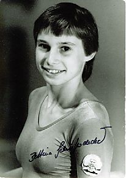

Bettina Schieferdecker (GDR)
1982 Jr. European UB Champion
1988 Olympic Games Team Bronze Medalist

Medal Total
Olympic Games: 1
Bronze
World Championships: 1 Bronze
Competition Results
1982
Jr. European Championships: 11th AA, 1st UB, 7th FX
Moscow News International: 11th AA
1983
GDR Championships: 4th AA
World Championships: 3rd Team
1984
Champions All: 6th AA
Chunichi Cup: 4th AA, 1st UB
CSSR Spartakiade (Olomouc): 2nd Team, 10th AA, 3rd FX, 4th V
GDR Championships: 2nd AA, 2nd UB, 2nd FX, 3rd B
GDR-HUN Dual Meet: 1st Team, 2nd AA
Peking International: 5th AA
Tokyo Cup: 2nd UB, 2nd B
1985
GDR Championships: 5th AA, 4th UB
1988
GDR Championships: 3rd AA, 3rd V, 3rd FX
GDR Olympic Trials: 2nd AA
Olympic Games: 3rd Team
This page was created on September
12, 2004.
© Gymn Forum